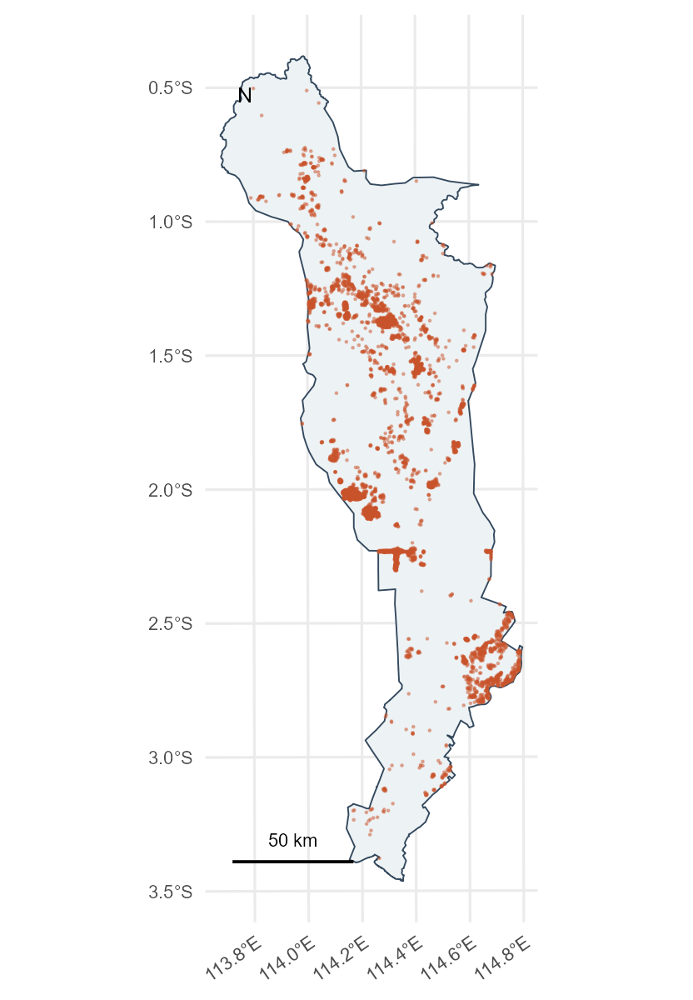
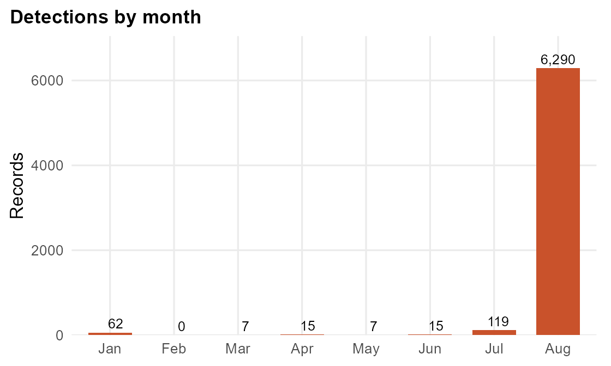
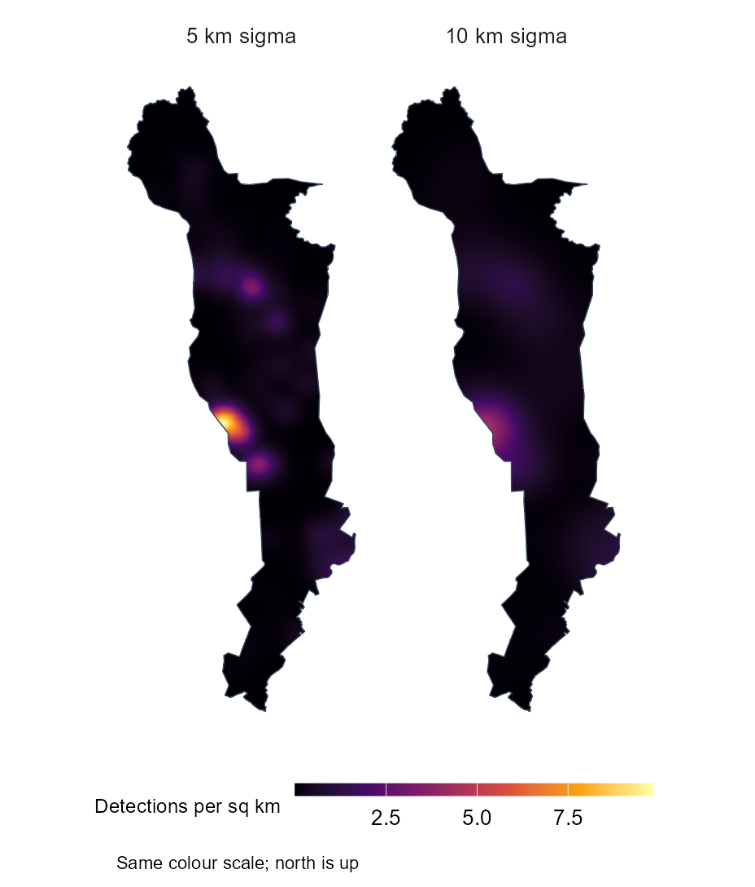
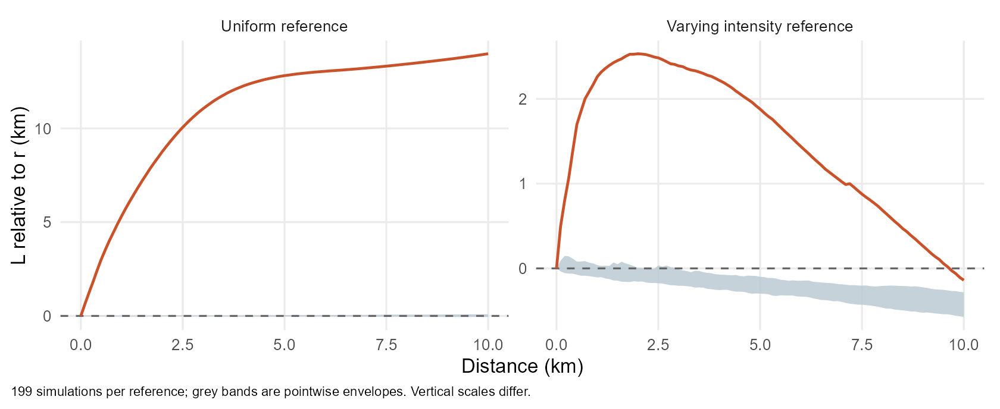

ISSS626 · January to August 2026
Where are thermal detections concentrated in Kapuas, and how might the patterns help public safety planning?
Each point is a satellite observation. Several observations may come from the same fire.

Kapuas, Central Kalimantan
Kapuas and the period were chosen before testing the pattern. Sources: FIRMS request 804686 and BIG boundary object 526.
| Step | Records |
|---|---|
| Indonesia download | 199,798 |
| Within Kapuas before confidence filtering | 6,716 |
| Low confidence detections removed | 201 |
| Retained for analysis | 6,515 |
Coordinates, dates and geometry passed the checks. There were no duplicate observation keys.
Main limitation: 6,431 retained records have no hotspot type. The analysis therefore describes thermal detections, including one known static source, rather than confirmed forest fires.

August: 6,290 detections, or 96.5% of the total.
Counts are not adjusted for satellite coverage. A month with zero records does not prove that no fires occurred.

Both bandwidths retain the main western peak near 2.0°S. Broader smoothing merges smaller peaks; rank correlation is 0.912.

Location: the maps show several concentrations, with the main KDE peak near the western boundary at 2.0°S.
Timing: the pooled spatial pattern mainly represents August 2026.
Neighbouring detections: the L curves show more local concentration than the two references. Repeated observations of one fire and finer environmental differences remain possible explanations.
These are useful places to investigate further. The results do not identify separate interacting fires or explain their causes.
The results support county planning and further investigation. Current emergency decisions would need current information verified locally.